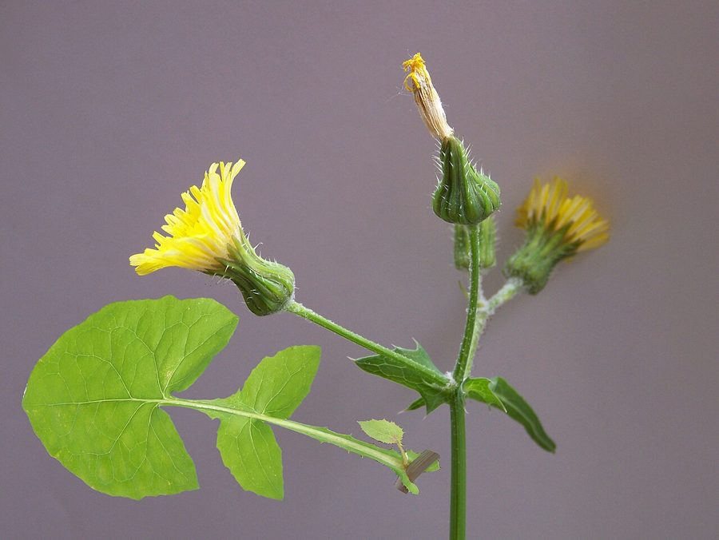

कॉमन सॉथिसलCommon Sowthistle
Sonchus oleraceus · Asteraceae · FLR-0400

- Scientific name वैज्ञानिक नाम
- Sonchus oleraceus L.
- Family कुल
- Asteraceae
- Hindi हिंदी
- कॉमन सॉथिसल
- Local names स्थानीय नाम
- common sowthistle, sowthistle
- Status here यहाँ की स्थिति
- naturalized
- Movement आवागमन
- Resident, here all year
- Known from कहाँ दर्ज
- Others have published records from the wider Awadh–Purvanchal plain, none yet from Basti–Ayodhya अवध–पूर्वांचल से दूसरों के प्रकाशित अभिलेख, बस्ती–अयोध्या से अभी नहीं
- IUCN IUCN
- not evaluated
- Review समीक्षा
- not yet reviewed
When to look कब देखें
Expected mainly in January, February, March, April, October, November, December. मुख्यतः जनवरी, फ़रवरी, मार्च, अप्रैल, अक्टूबर, नवंबर, दिसंबर में अपेक्षित।
Tell it apart from इनसे अलग पहचानें
कॉमन सॉथिसल / Common Sowthistle
Sonchus oleraceus L. — Asteraceae
कॉमन सॉथिसल — यह रबी के मौसम में खेतों की मेड़ों, नालियों और परती जमीन पर उगने वाला एक सीधा और कोमल खरपतवार है। इसके तने खोखले होते हैं और तोड़ने पर गाढ़ा सफेद दूधिया रस निकलता है। इसकी पत्तियाँ किनारों पर दाँतेदार होती हैं और ऊपरी हिस्से में छोटे पीले सिरों वाले फूल खिलते हैं।
Quick Identification त्वरित पहचान
| Feature | Description |
|---|---|
| Plant habit | Erect annual herb with hollow grooved stems and milky latex |
| Basal leaves | Thin runcinate-pinnatifid leaves with large triangular terminal lobes |
| Cauline leaves | Semi-amplexicaul with sharply pointed spreading basal auricles |
| Inflorescence | Loose terminal corymbose or subumbellate clusters of yellow flower-heads |
| Involucre | Cylindrical or bell-shaped bracts, predominantly glabrous |
| Fruit | Oblong-elliptic compressed achenes with fine transverse wrinkles and pappus |
Field tip: Look for hollow glaucous stems yielding milky sap and thin leaves with pointed arrow-like spreading auricles embracing the stem.
हिंदी: खोखले तने, सफेद दूधिया रस और तने को घेरने वाली नुकीली पत्तियों से इसे आसानी से पहचाना जा सकता है।
Morphology आकारिकी
Measurement not available in consulted sources.
An erect annual herb of winter crops and waste places. Taproot slender and branched, whitish. Stem erect, single or branched from the base, striate, hollow, pale green to glaucous, exuding a white milky emulsion upon bruising or fracture.
Basal leaves form a short-lived rosette, soon withering as flowering stems elongate. Cauline leaves alternate, thin, dull green or glaucous below, deeply runcinate-pinnatifid with a large terminal lobe and backward-pointing lateral lobes, margins irregularly dentate with soft or prickly-pointed teeth; leaf base dilated into acute, horizontally spreading or spear-shaped auricles clasping the stem.
Flower-heads (capitula) borne in terminal subumbellate or corymbose clusters on slender peduncles. Involucre cylindrical to campanulate, composed of imbricate green bracts that are mostly glabrous or sparsely glandular-hispid. Florets all ligulate and bisexual, with bright yellow corolla tubes and spreading five-toothed yellow ligules.
Achenes obovoid-oblong, distinctly compressed, longitudinally ribbed with fine transverse rugosities, brownish, surmounted by a persistent pappus of copious fine white silky hairs that aid in wind dispersal.
हिंदी: पौधा सीधा और चिकना होता है। पत्तियाँ कटी-फटी होती हैं जिनके किनारे पर हल्के कांटेदार दाँते होते हैं। फूल चमकीले पीले और छोटे होते हैं जिनके पकने पर सफेद रोयेंदार बीज हवा में उड़ते हैं।
Behaviour & Ecology व्यवहार और पारिस्थितिकी
A fast-growing winter annual native to the Mediterranean region and Eurasia, now widely naturalized across the Gangetic plains. The plant germinates promptly with the onset of cool autumn temperatures following post-monsoon crop sowings. It thrives in loose, moisture-retentive alluvial loam, especially where soil has been turned for cultivation.
The species produces an abundance of parachute-equipped achenes that disperse widely on gentle winter breezes. It behaves as an opportunist, exploiting nitrogen-rich bare ground, ditch verges, garden compost heaps, and borders of irrigated rabi plots. It cannot tolerate severe drought or extreme hot winds (loo), dying back entirely by late spring.
हिंदी: यह पौधा हल्की ठंड शुरू होते ही उगता है और नम, उपजाऊ मिट्टी में तेजी से फैलता है। हवा के साथ इसके रोयेंदार बीज दूर-दूर तक बिखर जाते हैं।
Life Cycle / Phenology जीवन चक्र
Seeds germinate from October to December following irrigation or winter rainfall. Vegetative growth is rapid during December and January, building a sturdy hollow stem. Flowering commences in January and peaks in February and March.
Fruit maturation follows rapidly within a few weeks of pollination. Plumed achenes detach readily on dry sunny afternoons from late February to mid-April. By late April, the entire plant desiccates and completes its annual cycle, persisting through the scorching summer months solely as dormant seeds in the soil seedbank.
हिंदी: अक्टूबर से दिसंबर के बीच बीज अंकुरित होते हैं। जनवरी से मार्च में फूल खिलते हैं और अप्रैल तक बीज बिखरने के बाद पौधा पूरी तरह सूख जाता है।
Associated Species / Interactions सहजीवी प्रजातियाँ
The open yellow flower-heads provide accessible nectar and pollen to winter-active hoverflies, honeybees, and small solitary halictid bees. Various polyphagous aphids colonize the tender flower stalks and succulent upper leaves.
In cultivated plots, it grows in close proximity to winter weeds such as prickly sow thistle, bathua, and sweet clover. Ground beetles and ant colonies forage around the root crowns and scavenge fallen seeds.
हिंदी: इसके पीले फूलों पर मधुमक्खियाँ और छोटी मक्खियाँ रस चूसने आती हैं। इसके कोमल तनों पर अक्सर माहू कीट लग जाते हैं।
Pests and Diseases कीट और रोग
Succulent young shoots are frequently infested by sowthistle aphids and polyphagous green peach aphids, attracting coccinellid ladybird beetles. Foliage is susceptible to powdery mildew and downy mildew during humid cloudy spells in January and February.
हिंदी: बादलों वाले मौसम में पत्तियों पर फफूंद का सफेद चूर्ण दिखाई देने लगता है और कोमल डालियों पर माहू का हमला होता है।
Agricultural / Human Relevance कृषि प्रासंगिकता
In eastern Uttar Pradesh, it is primarily regarded as a winter weed of wheat, barley, potato, and mustard crops, competing for moisture, soil nitrogen, and sunlight. If left unmanaged in vegetable nursery beds, dense seedling stands can smother young crop seedlings.
हिंदी: यह गेहूं और सरसों की फसल में उगकर नमी और खाद की चोरी करता है।
Expected Locally स्थानीय रूप से अपेक्षित
Not a field record. Written from published accounts for eastern Uttar Pradesh. No confirmed local sighting yet — if you have seen it, that is what the atlas needs.
अभी तक स्थानीय पुष्टि नहीं। यह विवरण प्रकाशित स्रोतों से है, किसी अवलोकन से नहीं।
Expected along edges of irrigated wheat and mustard fields, garden plots, canal banks, and moist compost piles across Basti, Ayodhya, and neighbouring districts from November through April. GBIF holds published records from the wider Awadh–Purvanchal plain, none yet from Basti–Ayodhya. The first verifiable record from the region will be a dated photograph of flowering plants or a population in a weed habitat or field border with district and coordinates.
हिंदी: बस्ती और अयोध्या में इसे रबी फसलों की मेड़ों और नम बगीचों में सर्दियों के दिनों में खोजा जा सकता है।
Distribution वितरण
Global range: Native to Europe, North Africa, and Western Asia; now widely naturalized throughout temperate and subtropical regions globally.
In India: Naturalized throughout northern India, the Himalayas up to moderate elevations, and cooler agricultural tracts of the peninsula.
In Uttar Pradesh: Distributed across the agricultural plains, thriving along winter-irrigated river basins and field drains.
In Basti district / eastern UP: Expected in all agricultural blocks with winter rabi cultivation, particularly in well-irrigated loamy tracts.
हिंदी: मूल रूप से भूमध्यसागरीय क्षेत्र का पौधा होने के बावजूद आज यह पूरे भारत और उत्तर प्रदेश के मैदानी इलाकों में फैल चुका है।
Research Questions शोध प्रश्न
- What proportion of winter hoverfly visits to yellow weed flowers in wheat borders are accounted for by this species?
- How does the seed dormancy and germination timing of this naturalized weed correlate with wheat sowing schedules in eastern UP?
- What is the impact of soil moisture levels on the ratio between this species and
prickly sow thistlein local fields? / क्या स्थानीय खेतों में नमी के आधार पर इसकी और कांटेदार सॉथिसल की संख्या में अंतर आता है? - Do local farming communities harvest the young leaves as wild saag, or is it discarded entirely during weeding? / क्या ग्रामीण क्षेत्रों में निराई के दौरान इसकी कोमल पत्तियों को साग के रूप में उपयोग किया जाता है?
- How far can a child blow and track a single pappus-bearing seed across an open wheat field on a breezy winter day?
हिंदी: क्या इस खरपतवार के फूल लाभदायक परागणक कीटों को आकर्षित करते हैं और क्या किसान इसकी पत्तियों का कोई घरेलू उपयोग करते हैं?
Similar Species मिलती-जुलती प्रजातियाँ
| Species | How to tell apart | हिंदी | |
|---|---|---|---|
| `[[prickly_sow_thistle\ | Sonchus asper]]` | Leaves stiffer with sharply spinous-dentate margins and rounded, appressed auricles | पत्तियाँ अधिक कांटेदार और आधार पर गोल मुड़ी हुई होती हैं |
| `[[creeping_thistle\ | Cirsium arvense]]` | Stems perennial with creeping roots; heads dioecious with dull purple florets and pungent spines | तना बहुवर्षीय, कांटेदार और फूल हल्के बैंगनी रंग के होते हैं |
Field rule: Look at the leaf auricles embracing the stem: pointed and spreading in common sowthistle, rounded and coiled-appressed in prickly sowthistle.
हिंदी: तने को पकड़ने वाले पत्ती के आधार को देखें: कॉमन सॉथिसल में यह नुकीला और सीधा फैला होता है, जबकि कांटेदार सॉथिसल में गोल मुड़ा होता है।
Taxonomy & Classification वर्गीकरण
Original description. Described by Carl Linnaeus in 1753 in Species Plantarum, volume 2, page 794, based on European material.
Subspecies. Monotypic in our region; several morphological varieties have been named historically across its native Eurasian range but are regarded as phenotypic variations.
Family and order placement. Placed in family Asteraceae (tribe Cichorieae), order Asterales. It shares the characteristic strap-shaped florets and milky sap typical of the dandelion tribe.
Phylogenetic notes. Closely allied to Sonchus asper and Sonchus arvensis, with which it can occasionally form sterile or semi-fertile hybrids where sympatric in open ground.
IUCN status rationale. Not evaluated by the IUCN Red List. It is an abundant, widespread, and resilient naturalized weed with an expanding global range.
हिंदी: यह एस्टरेसी परिवार का सदस्य है। लिनियस ने 1753 में इसका मूल वर्णन किया था।
Photo Gallery फोटो गैलरी
No photos yet — add field photos to media/species/common_sowthistle/ and run node scripts/sync_photos.js.
Photos needed आवश्यक फोटो
- [ ] Basal leaf rosette and clasping stem auricles (तने से सटी पत्तियाँ और आधार)
- [ ] Flowering yellow capitulum in close-up (पीले फूल का नजदीकी चित्र)
- [ ] Mature fruiting head with radiating white pappus (सफेद रोयेंदार बीजों का गुच्छा)
References संदर्भ
- Linnaeus, C. (1753). Species Plantarum, vol. 2, p. 794.
- Duthie, J. F. (1905). Flora of the Upper Gangetic Plain and of the Adjacent Siwalik and Sub-Himalayan Tracts, vol. 1, part 2, p. 492.
- Hooker, J. D. (1881). The Flora of British India, vol. 3, p. 414.
- Chopra, R. N., Nayar, S. L. & Chopra, I. C. (1956). Glossary of Indian Medicinal Plants, Council of Scientific and Industrial Research, New Delhi, p. 230.
- GBIF Occurrence Data — Sonchus oleraceus, India (2025).
Source file: species/flora/weeds/common_sowthistle.md